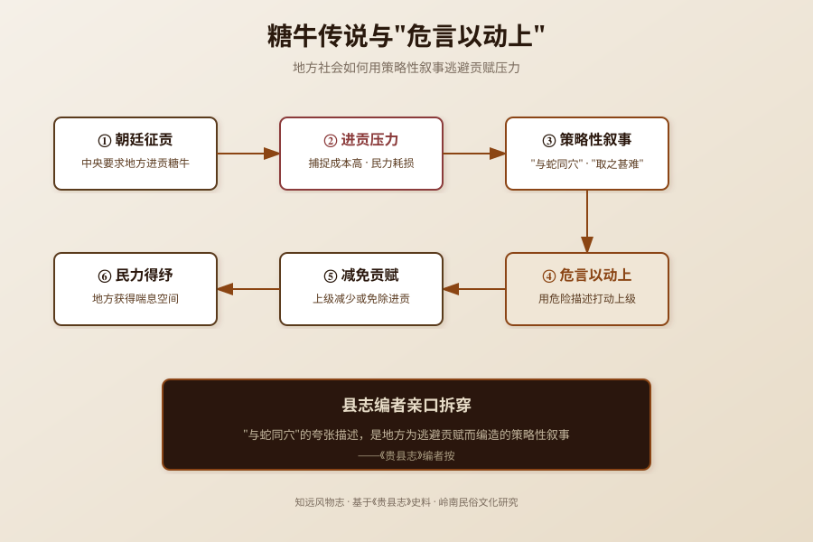

民国二十三年，《贵县志》卷十三《古迹》记载了一个奇特的传说——汉布山县产糖牛，与蛇同穴，牛嗜盐，俚人以皮裹手涂盐入穴诱执而截其角，琢以为器，珍贵胜玉。但县志编者紧接着加了一段按语，亲手拆穿了这个传说："所云与蛇同穴者，乃当时以之充贡厉民，求为独免，不得不危言以动上耳。"糖牛传说不是奇谈怪论——"与蛇同穴"是地方为逃避贡赋而编造的策略性叙事。本文基于《贵县志》，还原糖牛传说背后的贡赋博弈。
讨论"糖牛传说"，必须先区分五个层次，避免概念混杂：
| 概念 | 性质 | 说明 | 本文是否讨论 |
|---|---|---|---|
| 糖牛传说 | 民间传说文本 | 汉布山县产糖牛，与蛇同穴，牛嗜盐 | 是，核心讨论对象 |
| 糖牛 | 传说中的动物 | 角若琼玖，可琢为器，珍贵胜玉 | 是，作为传说的核心元素 |
| 贡赋制度 | 国家财政制度 | 地方向中央进贡土特产的制度 | 是，作为传说的制度背景 |
| 危言以动上 | 县志编者的推断 | 地方用夸张传说逃避贡赋的策略 | 是，核心论点 |
| 县志按语 | 史料考证 | 县志编者对传说的评价和解释 | 是，作为核心史料 |
本文讨论糖牛传说的文本内容、县志按语的祛魅、贡赋制度的背景，以及地方社会如何用传说应对制度压力。
糖牛传说的源头可追溯至汉代布山县（今广西贵港一带）的地方记载。但本文所见地方志材料为民国《贵县志》的记录，更早的汉代原始文献已不可考，因此不做"起源于汉代"的确定性判断，只能说"旧志称汉布山县产糖牛"。
《贵县志》卷十三《古迹》记载了糖牛传说的完整文本：汉布山县产糖牛，牛性嗜盐，与蛇同穴。俚人以皮裹手涂盐入穴，牛舐其盐，诱执而截其角，琢以为器，珍贵胜玉。糖牛角若琼玖，用以为甲，燔箭蛇疮如凉雨之洒荷叶。
关键在于县志编者的按语："县志按语谓今之白水牛自浔至诸谿峒所在有之，今之明角是也，所云与蛇同穴者，乃当时以之充贡厉民，求为独免，不得不危言以动上耳。"
这段按语是理解糖牛传说的核心——县志编者自己就拆穿了传说：所谓"与蛇同穴"的夸张描述，是因为糖牛角被列为贡品，地方为了逃避贡赋，不得不编造危险的传说来"动上"（打动上级，使其放弃征收）。
从制度演变看，贡品制度是中国古代中央与地方关系的重要组成部分。地方向中央进贡土特产，既是财政义务，也是政治忠诚的表达。但贡品征收往往成为地方的负担——"充贡厉民"四个字，道出了贡品制度对地方民众的压榨。糖牛传说正是在这种制度压力下产生的策略性叙事。
糖牛传说的文本包含几个关键元素，每个元素都有其功能：
元素一：与蛇同穴
这是传说中最夸张、最危险的元素。糖牛与毒蛇同穴，意味着捕捉糖牛极其危险，随时可能被毒蛇攻击。这一元素的功能是"增加捕捉成本"——既然糖牛与毒蛇同穴，捕捉风险极高，上级就不应该强迫地方进贡。
元素二：牛嗜盐
糖牛嗜盐，俚人以皮裹手涂盐入穴，牛舐其盐，诱执而截其角。这一元素的功能是"提供捕捉方法"——虽然危险，但有方法可以捕捉（用盐引诱）。这使传说既有可信度（有具体方法），又有危险性（与蛇同穴）。
元素三：角若琼玖，珍贵胜玉
糖牛角极其珍贵，可琢为器，用以为甲。这一元素的功能是"解释为什么会被列为贡品"——正因为糖牛角珍贵，中央才会要求地方进贡。这也反过来解释了地方为什么要编造危险传说——因为贡品价值高，征收压力大。
元素四：燔箭蛇疮如凉雨之洒荷叶
糖牛角烧成灰可以治疗蛇疮，效果如凉雨洒荷叶。这一元素的功能是"增加药用价值"——糖牛角不仅是珍贵器物，还有药用功能。这进一步解释了为什么糖牛角会被列为贡品，也增加了传说的可信度。
县志编者的按语精准地指出了这些元素的功能："所云与蛇同穴者，乃当时以之充贡厉民，求为独免，不得不危言以动上耳。"——所有夸张的危险描述，都是为了逃避贡赋。
《贵县志》编者的按语，是中国地方志编纂中罕见的"自我祛魅"案例。大多数地方志会如实记载民间传说，不做评价或解释。但《贵县志》编者不仅记载了糖牛传说，还主动拆穿了传说的功能——这是非常难得的史料批判意识。
编者的祛魅逻辑可以拆解为三步：
第一步：识别真实对象
编者指出，传说中的"糖牛"就是当时常见的白水牛——"今之白水牛自浔至诸谿峒所在有之，今之明角是也"。白水牛的角就是"明角"，是常见的器物材料，并不神秘。
第二步：识别夸张元素
编者指出，"与蛇同穴"是夸张描述，不是事实。白水牛并不与蛇同穴，这一描述是人为添加的危险元素。
第三步：识别功能动机
编者指出，夸张描述的动机是逃避贡赋——"乃当时以之充贡厉民，求为独免，不得不危言以动上耳"。地方因为糖牛角被列为贡品，民众深受其害，为了逃避征收，不得不编造危险传说来打动上级。
这三步祛魅逻辑，体现了县志编者的史料批判精神和对民间疾苦的同情。编者没有简单地把传说当作奇谈怪论记录下来，而是深入分析了传说产生的社会背景和功能动机——这在地方志编纂中是非常难得的。
糖牛传说的核心价值，在于它揭示了地方社会如何用叙事手段应对制度压力。在贡品制度下，地方没有正式的渠道拒绝中央的征收要求，只能用"危言"（夸张的危险传说）来间接表达抗拒——"这个东西太危险了，我们实在没法进贡"。
这种"用叙事对抗制度"的策略，在中国历史上并不罕见。地方社会往往通过传说、谣言、祥瑞灾异等叙事手段，来影响中央决策、逃避制度压力、争取生存空间。糖牛传说是这种策略的一个典型案例。
从更深层看，糖牛传说反映了中央与地方之间的信息不对称。中央远离地方，不了解地方的真实情况，只能通过地方上报的信息来决策。地方利用这种信息不对称，通过夸张和扭曲的叙事来影响中央决策——这是一种"弱者的武器"。
今天，这种"用叙事对抗制度"的策略仍然存在。从企业的合规规避，到个人的制度博弈，叙事始终是弱者对抗强者的重要工具。糖牛传说虽然是几百年前的故事，但它揭示的博弈逻辑，在今天仍然有效。
---

糖牛是传说中的动物，相传汉布山县（今广西贵港一带）产糖牛，牛性嗜盐，与蛇同穴。糖牛角若琼玖，可琢为器，珍贵胜玉，还可烧成灰治疗蛇疮。但《贵县志》编者明确指出，传说中的"糖牛"就是当时常见的白水牛——"今之白水牛自浔至诸谿峒所在有之，今之明角是也"。糖牛不是神秘动物，而是被神化和夸张化的白水牛。
《贵县志》编者亲口拆穿了这一点："所云与蛇同穴者，乃当时以之充贡厉民，求为独免，不得不危言以动上耳。"意思是，糖牛角被列为贡品，地方民众深受征收之苦，为了逃避贡赋，不得不编造"与蛇同穴"的危险传说，来打动上级（"危言以动上"），使其放弃征收。"与蛇同穴"不是事实，而是地方逃避贡赋的策略性叙事。
《贵县志》编者的评价非常深刻，体现了难得的史料批判意识。编者做了三步祛魅：第一，识别真实对象——糖牛就是常见的白水牛，其角就是"明角"；第二，识别夸张元素——"与蛇同穴"是人为添加的危险描述，不是事实；第三，识别功能动机——夸张描述的目的是逃避贡赋，"乃当时以之充贡厉民，求为独免，不得不危言以动上耳"。编者没有简单地把传说当作奇谈怪论记录，而是深入分析了传说产生的社会背景和功能动机。
"充贡"指作为贡品进献给中央，"厉民"指虐害、压榨民众。"充贡厉民"合起来的意思是：（糖牛角）被列为贡品，征收过程中严重压榨了地方民众。这四个字道出了贡品制度对地方民众的伤害——贡品征收往往成为地方的沉重负担，民众被迫冒着危险捕捉糖牛、截取牛角，进献给中央。正是因为"充贡厉民"，地方才不得不编造危险传说来逃避征收。